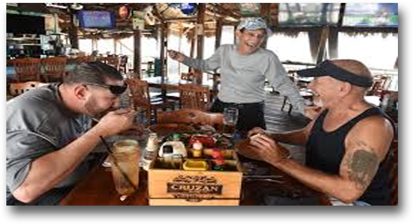
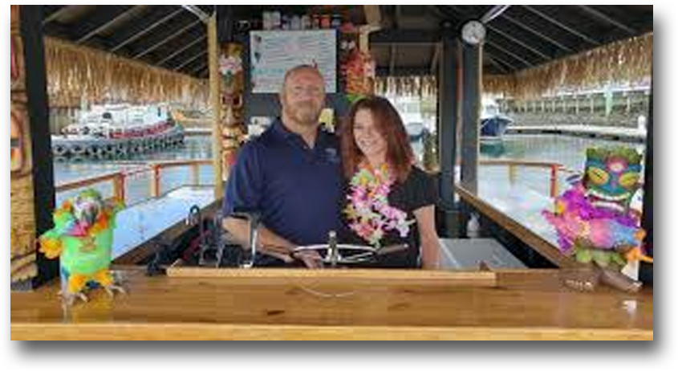

Autor 2
Hacía tiempo que no comíamos algo tan bueno y de tanta calidad. Si es cierto que el sitio se hace un poco pequeño y días de fin de semana seguramente se llene mucho. Pero la comida es excelente, cada plato que pruebas, ace que quieras probar otro que saca a otros comensales. Un sitio muy recomendado. • Julián López Torres
Autor 1
Muy Lindo el lugar, cuida los detalles, platos originales, pero con los pies en la tierra. Destaca los sabores reales sin demasiados adornos o disfraces, algo que se agradece. Agradable y perfecto para sentarse en la barra a disfrutar de tu comida en solitario charlando con alguno de sus propietarios mientras ves como cocinan para ti. ¡Simplemente genial! • Johanna Suarez
Autor 3
Soy fan y clienta del La Isla Restobar desde el primer día. Sin duda es el lugar donde mejor se come de Miraflores. Excelente calidad, producto directo, sin excesivas y aburridas guarniciones que encarecen y aumentan las calorías, alimento de temporada, postres magníficos y caseros, bebidas y licores de primera calidad, menaje y cubiertos de diseño, limpieza absoluta... Grandes profesionales y mejores personas, saben más que nadie, pero se mantienen en esa humildad que les hace tan grandes. ¡¡¡Enhorabuena!!! • Teresa Valverde S.